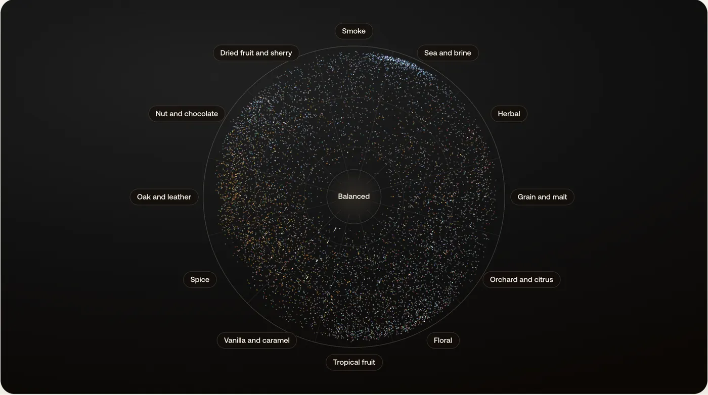
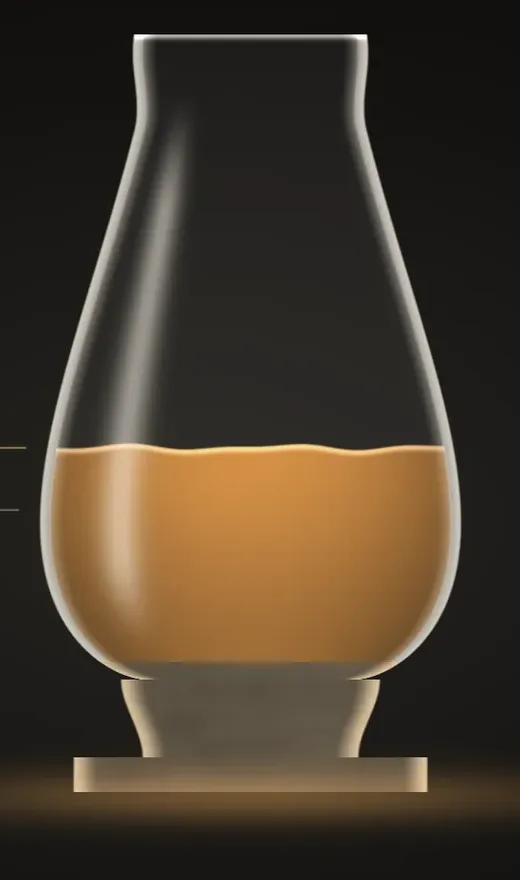

Everything here runs on the same 8,225 ratings. Find your next bottle, pour it the way you like it, and learn where it comes from.

Flavor mapEvery bottle we have rated, placed by how it tastes.Open the map →
NewWater your whiskyExactly how much water to add to any bottle.Pour one → Distillery globe473 houses, lit where the whisky is made.Turn the globe →Search, compare and ask across every rating since 2013.
At home with the bottle: strength, palate, shelf and glass.
The houses, the language and the shelf talker.
Fresh ratings and new releases in your inbox. See every newsletter →